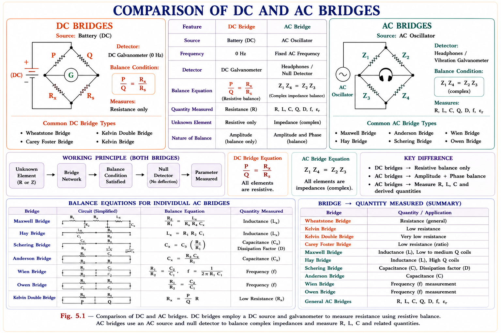
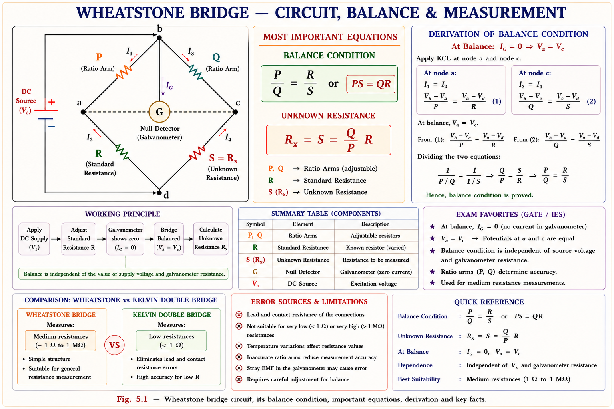
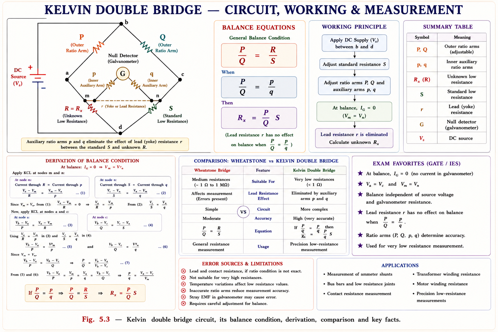
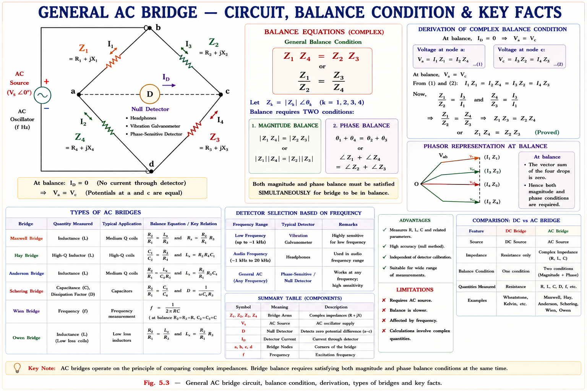
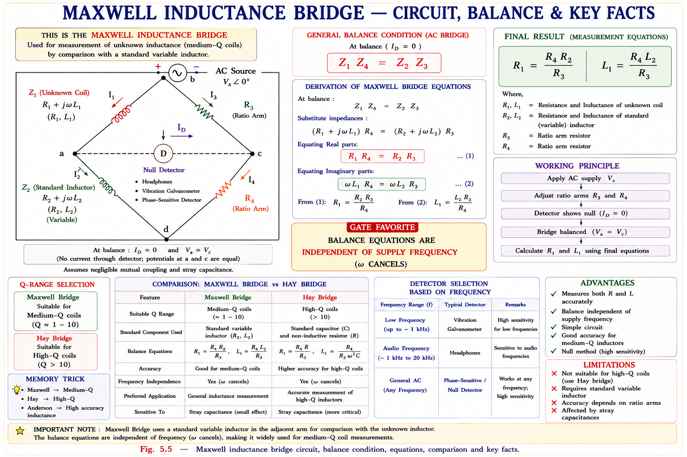
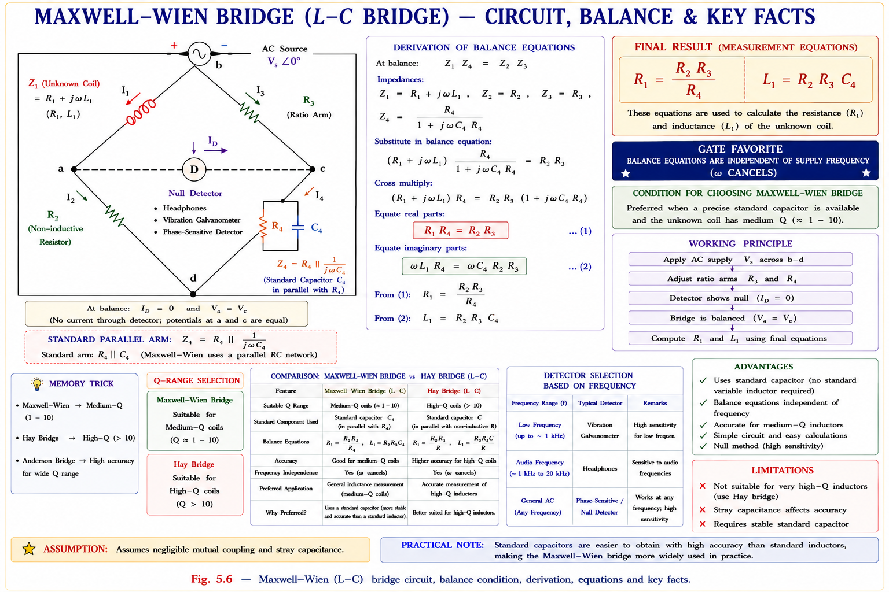
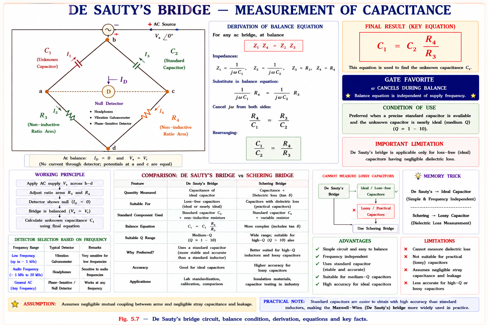
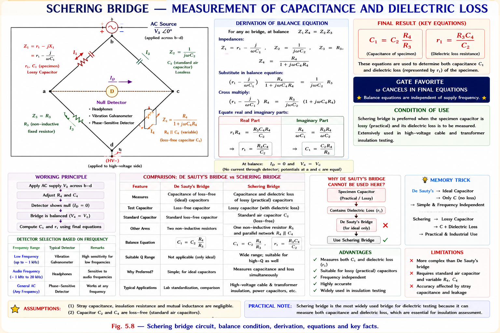
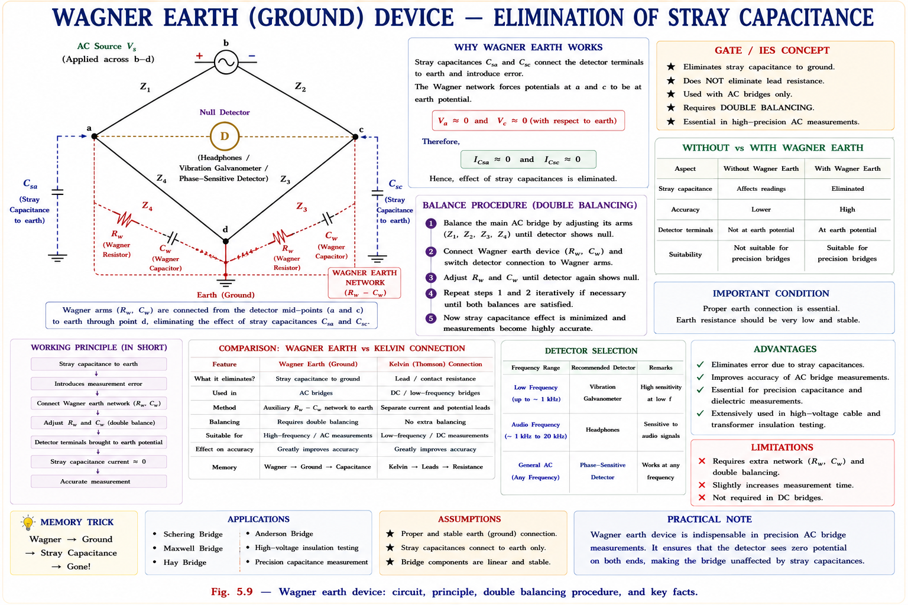

A rigorous, exam-oriented study of DC and AC bridge circuits — Wheatstone, Kelvin, Maxwell, Hay, Owen, Anderson, De-Sauty, Schering, and Wien bridges — with complete derivations, intuitive phasor analysis, and GATE/IES exam insights drawn from standard reference textbooks.
Conventional ohmmeter or voltmeter–ammeter methods have accuracy limited by meter resistance and reading error. A bridge circuit compares an unknown component against a known standard by driving a galvanometer or detector to null, giving accuracy independent of supply voltage and detector sensitivity — making it the gold standard for precision component measurement.
The fundamental idea behind every bridge circuit is comparison by null deflection. Rather than measuring a quantity directly, the bridge pits the unknown against a calibrated standard. When the bridge is balanced, zero current flows through the detector — at this null condition, the ratio of known impedances directly yields the unknown. This null approach eliminates errors due to voltmeter loading, ammeter resistance, and source fluctuation.[1]
Every bridge circuit belongs to one of two families determined by the excitation source:

Bridge families: DC bridges measure resistance; AC bridges measure R, L, C and derived quantities.
At bridge balance, the detector reads zero. This means the bridge reading is independent of the detector's internal resistance and independent of the exact supply voltage. This is why bridge measurements are far more accurate than deflection-type measurements.
The Wheatstone bridge, introduced by S.H. Christie in 1833 and popularised by Charles Wheatstone in 1843, remains the standard method for precision measurement of medium resistances (1 Ω to 100 kΩ). It is a four-arm DC bridge energised by a battery, with a galvanometer connected between the mid-points of two potential dividers.[1]

Wheatstone bridge: P, Q are ratio arms; R is the variable standard; S is the unknown resistance. G is the galvanometer detector.
Derived from: Golding & Widdis, Electrical Measurements & Measuring Instruments, 5th ed., Ch.5 [1]
At balance, the galvanometer carries zero current (\(I_G = 0\)). Applying Kirchhoff's current law at nodes a and c:
Applying KVL around the two loops via Thevenin reasoning, the potentials of nodes a and c must be equal:
Dividing the first relation by the second:
The unknown resistance \(S\) depends only on the ratio \(P/Q\) and the known standard \(R\), entirely independent of the supply voltage \(E\) and the galvanometer resistance \(G\). This is the power of bridge null methods.[1]
The sensitivity of a galvanometer bridge is defined in two related ways:
When both variable elements are in adjacent arms, adjusting one disturbs the other — this is called sliding balance. Always select the uncommon (different-type) elements as the variables, placed in opposite arms, to avoid this convergence problem. This principle applies to all AC bridges too.
For unbalanced bridge analysis, replace the bridge with its Thevenin equivalent seen by the galvanometer:
Under balance: \(SP = QR\), so \(V_{th} = 0\) and \(I_g = 0\) as expected.
In a Wheatstone bridge, P = 100 Ω, Q = 200 Ω, R = 400 Ω. At balance, the unknown resistance S equals:
Key insight: Always write balance as \(PS = QR\), so \(S = QR/P\). Never confuse which arms are adjacent vs opposite.
When the resistance to be measured falls below about 1 Ω, the Wheatstone bridge fails because the contact resistance of the terminals and the resistance of the connecting leads become comparable to the unknown itself — introducing significant errors. Lord Kelvin devised the double bridge (also called Kelvin's double bridge or Thomson bridge) specifically to eliminate lead and contact resistance effects.[2]
For a resistance of 0.001 Ω, a lead resistance of 0.002 Ω represents a 200% error! The Wheatstone bridge cannot distinguish the lead resistance from the specimen. Kelvin's solution: use 4-terminal (Kelvin) connections and an auxiliary bridge arm to cancel the yoke (lead) resistance mathematically.

Kelvin double bridge: P, Q are outer ratio arms; p, q are inner auxiliary arms; r is the yoke (lead) resistance between standard S and unknown R.
Adapted from: Golding & Widdis [1], Helfrick & Cooper [2]
The balance equation for the Kelvin double bridge is derived by setting the Thevenin voltage across the galvanometer to zero. Including the yoke resistance \(r\):[1]
The error term (second part) vanishes when:
In practice, the inner auxiliary arms \(p\) and \(q\) are constructed in the same ratio as the outer arms \(P\) and \(Q\), ensuring the error term is zero even though the yoke resistance \(r\) is non-zero. This is the fundamental cleverness of Kelvin's design — it mathematically cancels what cannot be physically eliminated.[2]
A low resistance must be connected using 4 terminals: two current terminals (1 and 2) carry the heavy measurement current, and two potential terminals (3 and 4) sense the voltage drop across the resistance only. This completely eliminates terminal and lead contact resistance from the voltage measurement. Kelvin clips implement this on test benches.
In Kelvin's double bridge, the purpose of the inner auxiliary arms \(p\) and \(q\) is to:
An AC bridge uses an alternating voltage source (typically a low-distortion oscillator at 50 Hz to 5 kHz) and replaces the DC galvanometer with an AC-sensitive detector such as a headphone, vibration galvanometer, or tuned amplifier. The four arms now carry complex impedances \(Z_1, Z_2, Z_3, Z_4\).[3]

General AC bridge: four complex-impedance arms, AC source and null detector.
At null (detector reads zero), the potential at node a equals the potential at node c. This requires both their magnitudes and phases to be equal simultaneously. Setting \(V_a = V_c\):
This dual condition is critical: both magnitude and phase must balance simultaneously. This is why AC bridges require two independent variable elements to reach balance — one to satisfy the magnitude condition and one to satisfy the phase condition.[3]
The product condition uses opposite arms: \(Z_1 Z_3 = Z_2 Z_4\). In the standard diamond labelling, arms 1–4 go around the diamond, so 1 and 3 are opposite, as are 2 and 4. Some textbooks use \(Z_1 Z_4 = Z_2 Z_3\) depending on numbering convention — always verify by drawing the circuit.
| Frequency Range | Detector | Sensitivity |
|---|---|---|
| 0 Hz (DC) | DC Galvanometer (mirror type) | Highest sensitivity |
| 5 – 20 Hz | Vibration galvanometer | Very good |
| 200 – 5000 Hz | Telephone headphones (earphone) | Good; most common |
| > 5 kHz | Tuned amplifier + headphones | Best for RF |
At power frequency (50 Hz), headphones are standard. At audio frequencies below 20 Hz, a vibration galvanometer resonates at the source frequency for better sensitivity.[3]
Inductance bridges use an AC source and measure an inductor's self-inductance \(L_1\) and its winding resistance \(R_1\). The quality factor \(Q = \omega L_1 / R_1\) determines which bridge is most appropriate. A practical inductor is modelled as an ideal inductance in series with a resistance.
The Maxwell inductance bridge compares an unknown inductive coil against a standard inductance \(L_2\). It is suitable for medium-Q coils (Q between 1 and 10).[3]

Maxwell inductance bridge: L₁R₁ = unknown coil; L₂R₂ = standard inductor in arm ad; R₃, R₄ = non-inductive ratio resistors.
Applying the balance condition \(Z_1 Z_4 = Z_2 Z_3\):
To avoid sliding balance, select \(R_2\) and \(L_2\) (uncommon elements from the two real equations — one from each equation) as the variables. These appear in opposite (non-adjacent) arms and can be varied independently without affecting each other.
A variable inductance is expensive and bulky. Maxwell proposed replacing the standard inductor with a fixed standard capacitor \(C_4\) — since high-quality capacitors are far cheaper and more stable. This variant is the most widely used inductance bridge in practice.[3]

Maxwell–L–C bridge: arm cd has R₄ in parallel with standard capacitor C₄. This avoids needing a variable inductor standard.
The arm \(cd\) contains \(R_4\) in parallel with \(C_4\). Its admittance is:
Applying \(Z_1 Z_4 = Z_2 Z_3\), equivalently \(Z_1 = Z_2 Z_3 Y_4\):
For high-Q coils (\(Q \gg 10\)): \(\omega C_4 R_4\) must be very large, requiring \(R_4 \to \infty\) which is impractical. For low-Q coils (\(Q \ll 1\)): \(R_4 \to 0\) which is also impractical. Hence this bridge is only suitable for medium Q coils: 1 < Q < 10.
Hay's bridge is used for high-Q coils (Q > 10). The key structural difference from Maxwell–L–C is that the capacitor \(C_4\) is placed in series with \(R_4\) instead of in parallel.[3]
For high-Q coils, \(\theta_1 \approx 90°\) so \(\theta_4 \approx -90°\) (capacitive), requiring \(\omega C_4 R_4 \to 0\), which means small \(R_4 C_4\) — practical. For low-Q, \(\omega C_4 R_4 \to 0\) making it impractical. Hence Hay is the bridge for high-Q (low-loss inductors).
| Bridge | C₄ Position | Q Range | Formula for L₁ |
|---|---|---|---|
| Maxwell–L–C | C₄ ∥ R₄ (parallel) | 1 – 10 | \(L_1 = R_2 R_3 C_4\) |
| Hay's | C₄ series R₄ | > 10 (High Q) | \(L_1 = \dfrac{R_2R_3C_4}{1+(\omega R_4C_4)^2}\) |
| Owen's | Two capacitors | Medium Q | \(L_1 = R_2 R_3 C_4 / 1\) (simplified) |
| Anderson's | Fixed C (5-point) | < 1 (Low Q) | Complex expression |
Owen's bridge uses two capacitors — making it unique among inductance bridges. It is suitable for measuring medium-Q coils and is especially useful for measuring incremental inductance \(\mu_0\) of iron-core inductors where a DC bias current must be superimposed.[3]
For incremental inductance measurement, a DC supply is added in series with inductor "L" to bias the iron core into a specific operating point; a capacitor blocks DC from entering the AC source, while an inductor blocks AC from entering the DC source.
Anderson's bridge is a modification of the Maxwell–L–C bridge. It is called a 5-point bridge because it has a central node e in addition to the four corners. It uses a single fixed capacitor and achieves balance with two variable resistors (\(r\) and \(r_1\)), making it ideal for low-Q coils (lossy inductors). It covers inductance from millihenry to a wide range and is the most accurate bridge for low-Q coils.[3]
Among all five inductance bridges (Maxwell, Maxwell–L–C, Hay, Owen, Anderson), Anderson's bridge is the most accurate for low-Q coil measurement. Its fixed capacitor makes it economical; the 5-point topology provides two independent balance conditions without a variable capacitor.
In a Maxwell–Inductance–Capacitance bridge, the Q-factor of the coil under test is given by:
Match the inductance bridges with their suitable Q range:
A practical capacitor is not ideal — it has a small dielectric loss (leakage through the dielectric). This loss is modelled as a resistance in series with the ideal capacitor. The dissipation factor (D-factor or loss tangent) characterises the quality of a capacitor:
Note that \(\sin\delta = \text{power factor of the capacitor}\), and \(\tan\delta \approx \sin\delta\) for small loss angles.

De-Sauty's bridge: C₁ (unknown) vs C₂ (standard); R₃, R₄ are non-inductive ratio resistors.
De-Sauty's bridge gives balance for perfect (lossless) capacitors only. If either capacitor has dielectric loss (series resistance), the imaginary-part balance condition is satisfied but the real-part residual remains unbalanced. For practical (lossy) capacitors, use the Modified De-Sauty or Schering bridge.
Series resistances \(r_1\) and \(r_2\) model the dielectric losses of the two capacitors. At balance:
This bridge measures both the capacitance and the dissipation factor of a practical capacitor.
The Schering bridge is the most important capacitance bridge. It accurately measures capacitance, D-factor, dielectric loss angle, relative permittivity, and properties of insulating materials. It is extensively used in high-voltage cable and transformer insulation testing.[4]

Schering bridge: arm ab = specimen (lossy capacitor r₁C₁); arm bc = standard lossless air capacitor C₂; arm cd = R₄∥C₄ (variable); arm da = fixed R₃.
The D-factor depends only on the variable elements \(C_4\) and \(R_4\) of the standard arm — completely independent of the specimen's \(C_1\) and \(r_1\). This elegant result is the reason the Schering bridge is calibrated directly in D-factor (loss angle).[4]
The Schering bridge: (1) measures C, D-factor, dielectric loss, and relative permittivity \(\varepsilon_r\); (2) operates at high voltage (suitable for cable insulation testing); (3) uses a standard compressed-air capacitor \(C_2\) which is almost lossless; (4) D-factor = \(\omega C_4 R_4\) involves only known standard elements. The HV supply goes to the bridge arms carrying high-voltage components; the detector and low-voltage components are at ground potential for safety.
Wien's bridge is unique in that it can be used to measure frequency from a known set of R and C values, or conversely to measure C from a known frequency. It is used in RC oscillators and distortion analysers.[3]
Applications include audio-frequency oscillators, distortion analysers, and frequency measurement from 100 Hz to 100 kHz. It is not suitable for harmonic-rich signals since each harmonic would require a separate balance condition.
In a Schering bridge at 50 Hz, \(R_4 = 318.3\) Ω and \(C_4 = 0.1\) μF at balance. The dissipation factor of the specimen is:
Tip: For Schering bridge, always write D = ωC₄R₄ directly — it never involves C₁ or r₁.
Resistance is classified into three ranges based on magnitude, and different measurement methods are optimal for each range:
| Category | Range | Examples | Best Method |
|---|---|---|---|
| Low Resistance | ≤ 1 Ω | Ammeter internals, motor windings | Kelvin double bridge, Potentiometer method |
| Medium Resistance | 1 Ω – 100 kΩ | Most circuit resistors, shunts | Wheatstone bridge, V-A method |
| High Resistance | > 100 kΩ | Cable insulation, dielectrics | Loss of charge, Megger, Mega-ohm bridge |
Two configurations exist: V-A (voltmeter-ahead) and A-V (ammeter-ahead). The key insight for GATE is understanding which connection introduces less error for a given resistance range:
The crossover resistance where both methods give the same error: \(R = \sqrt{R_a R_v}\). Below this use A-V; above it use V-A.
A capacitor \(C\) is charged to voltage \(V\) and then allowed to discharge through the unknown high resistance \(R\). By measuring the voltage \(V_c\) after time \(t\): \(R = \dfrac{0.4343 \cdot t}{C \log_{10}(V/V_c)}\). Used for cable insulation resistance in research labs.
The Megger uses an internal hand-driven or motor-driven DC generator (500 V, 1 kV, 2.5 kV, 5 kV ratings). A ratio-type moving coil movement (two coils at 90° with no spring control) gives a reading directly proportional to resistance. It measures insulation resistance of cables, motor windings, and transformers up to several hundred MΩ. Since there is no spring, zero and infinity markings are reversed compared to a standard ohmmeter.
Real AC bridges suffer from three parasitic effects that prevent true balance and introduce measurement errors:
Stray capacitances between the bridge nodes and earth (ground) are the most troublesome parasitic effect. The Wagner earth connection eliminates this error by bringing the bridge mid-points to ground potential.[3]

Wagner earth connection: Wagner arms (Rw, Cw) connected from the supply and detector mid-points to earth, eliminating stray capacitance effects Cs.
Procedure: (1) Switch to position A, balance the main bridge (Cs charges to a certain potential). (2) Switch to position B, adjust Wagner resistances \(R_w\) until the galvanometer reads zero again. This puts node a (and c) at earth potential. (3) Return to A — the balance is now with all stray capacitance discharged to earth, eliminating their effect. Repeat until the galvanometer shows zero in both positions simultaneously.
| Bridge | Measures | Q Range | Key Feature | GATE Prob. |
|---|---|---|---|---|
| Wheatstone | Medium R | — | \(PS = QR\); independent of G and E | 🟢 High |
| Kelvin Double | Low R | — | 4-terminal; \(P/Q = p/q\) eliminates yoke \(r\) | 🟢 High |
| Maxwell–L–C | L, R, Q | \(1 < Q < 10\) | \(C_4 \parallel R_4\); \(Q = \omega R_4 C_4\); frequency independent | 🟢 High |
| Hay's | L, R, Q | \(>10\) | \(C_4\) series \(R_4\); \(Q = \frac{1}{\omega R_4 C_4}\); freq. dependent | 🟡 Med |
| Owen's | L, R, Q, \(\mu_0\) | Medium | Two capacitors; incremental inductance | 🟡 Med |
| Anderson's | L, R (Low Q) | \(<1\) | 5-point; most accurate for low Q; fixed C | 🟡 Med |
| De-Sauty | C (perfect) | — | \(C_1 = \left(\frac{R_4}{R_3}\right)C_2\); no loss measurement | 🟡 Med |
| Schering | C, D, \(\varepsilon_r\) | — | \(D = \omega C_4 R_4\); HV testing of insulation | 🟢 High |
| Wien's | f (frequency) | — | \(f = \frac{1}{2\pi RC}\); used in oscillators | 🟡 Med |
Ask any doubt about bridge measurement techniques — derivations, numerical problems, or conceptual comparisons.
"H-M-L" → Hay's = High Q, Maxwell = Medium Q, Anderson = Absurdly low Q. Think of it as "H → M → L" going down the Q scale. Owen also sits in the medium range (Owen = Ok medium).
Maxwell = Parallel (Ma–Pa sound alike, both start with consonant+a). Hay's = series (High Q, so series — the opposite of parallel). Alternatively: Maxwell parallel has Q = ωRC; Hay's series has Q = 1/ωRC (reciprocal).
D = ωC₄R₄. Remember: the D-factor involves only the standard arm elements (subscript 4). "D four" → subscript 4 for both C and R. This also means Schering D is independent of the specimen's own r₁, making it highly accurate.
Imagine a detective (the galvanometer) who only speaks when something is wrong — at balance, the detective is silent (null). The detective compares the suspect (unknown impedance) against a known standard using a ratio. Being silent means the ratio is exactly right. This is why the bridge result is independent of how loud the detective's voice is (galvanometer resistance) or how bright the lamp in the room is (supply voltage).
\(PS = QR\); measures medium R (\(1\Omega\text{--}100\text{k}\Omega\)); reading independent of G and E; sensitivity maximum when all arms equal; Thevenin analysis for unbalanced case.
For low R (\(\le 1\Omega\)); 4-terminal Kelvin connections; inner arms \(p/q\) must satisfy \(P/Q = p/q\) to cancel yoke resistance \(r\); \(R = \left(\frac{P}{Q}\right)S\) at perfect balance.
\(Z_1 Z_3 = Z_2 Z_4\); dual balance required (magnitude AND phase); two independent variable elements needed; sliding balance avoided by placing variables in non-adjacent arms.
Maxwell–L–C (\(1 < Q < 10\)): \(L_1 = R_2 R_3 C_4\), \(Q = \omega R_4 C_4\) (\(C_4 \parallel R_4\)). Hay (\(Q > 10\)): \(C_4\) series, \(Q = \frac{1}{\omega R_4 C_4}\). Anderson (\(Q < 1\)): 5-point, most accurate for low-Q.
De-Sauty: \(C_1 = \left(\frac{R_4}{R_3}\right)C_2\) (perfect caps only). Schering: \(C_1 = \left(\frac{R_4}{R_3}\right)C_2\), \(D = \omega C_4 R_4\) (HV insulation testing, most important). Wien: measures frequency \(f = \frac{1}{2\pi RC}\).
Stray capacitance \(\rightarrow\) Wagner earth connection. Mutual inductance \(\rightarrow\) magnetic shielding. Stray conductance \(\rightarrow\) better insulation, guard rings. Sliding balance \(\rightarrow\) choose variables from opposite arms.
Instrument Transformers (CT & PT) — construction, equivalent circuits, ratio and phase-angle errors, burden, accuracy class, CT short-circuit rule, and GATE/IES exam problems on current transformer and potential transformer theory.
All technical content is derived from the following standard textbooks. All explanations, derivations, diagrams and examples are original to Aarova AI.